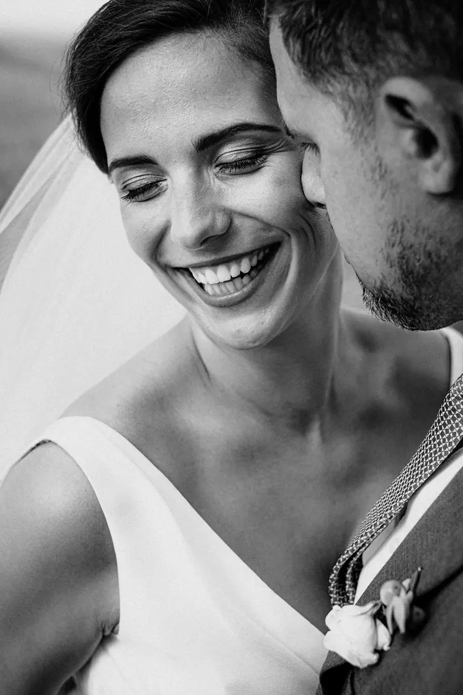
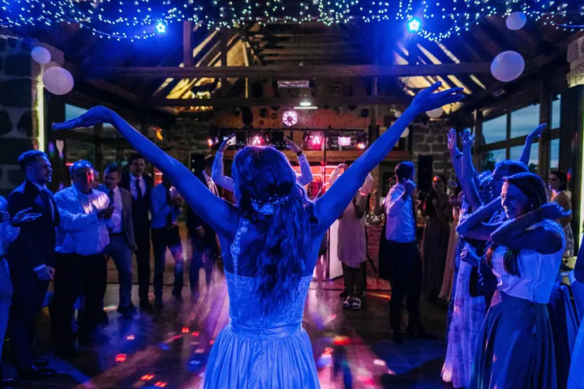
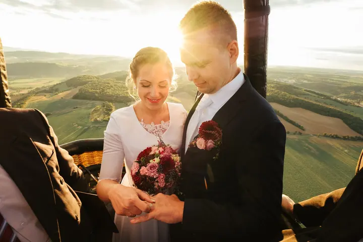
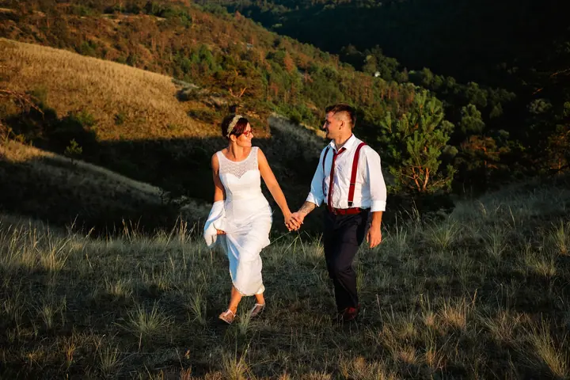

jedna
Svatby
Ke svatbám přistupuji otevřeně, bez seznamu záběrů. Přijdu jako host, zapadnu mezi vás a celý den fotím v reportážním stylu.

Svatební a rodinný fotograf · Třebíč, Vysočina

Jmenuji se Pavel Rybníček a z Třebíče vyrážím fotit svatby, páry a rodiny. Na svatbu nepřicházím s žádným seznamem záběrů, ale jako host, který si všímá souvislostí a fotí je v reportážním stylu.
Více o mně
Co fotím
jedna
Ke svatbám přistupuji otevřeně, bez seznamu záběrů. Přijdu jako host, zapadnu mezi vás a celý den fotím v reportážním stylu.
dvě
Rodiny, těhotenské focení i děti fotím v ateliéru, v přírodě nebo u vás doma. Na chvíli vstoupím do vašeho života a zachytím radost, kterou spolu máte.
tři
Jednu až dvě hodiny spolu strávíme venku, u vás doma, na horách nebo na vašich oblíbených místech. Vznikne z toho originální série fotek, které tvoří váš vlastní příběh.
Fotím provozovny, produkty, zaměstnance i reportáže z eventů, ať jste živnostník, nebo firma se spoustou zaměstnanců. Fotky pak můžete použít na web, na sociální sítě i do tiskovin.
Na svatbu přijdu jako host, ne jako režisér.


Za objektivem
Ke svatbám přistupuji otevřeně. Nemám seznam záběrů ani předem danou představu, jak to celé bude vypadat. Od svých klientů čekám jen jedno: že se opravdu milují a vědí, proč svatbu vůbec dělají.
Nechci z vaší svatby udělat focení. Přijdu jako host, zapadnu mezi vaše blízké a fotím to, co se mezi vámi opravdu děje. Fotil jsem svatby na statcích, v mlýnech, ve stodolách, v pivovaru i v horkovzdušném balónu nad Karlštejnem.
Kromě svateb fotím rodiny, těhotenské focení, páry a portréty, a to ve svém ateliéru v Třebíči, venku nebo u vás doma. Fotím i pro firmy, od kavárny za rohem až po velké stavební společnosti.
Pavel
Ozvěte se e-mailem nebo telefonem. Pošlu vám ceník svatebního focení a rád zodpovím všechny vaše otázky.
Než přijde váš den, sejdeme se a poznáme se. Probereme, jak bude svatba vypadat a co je pro vás důležité.
Přijdu jako host, ne jako režisér. Bez seznamu záběrů fotím celý den v reportážním stylu.
Fotky vyberu, upravím a předám vám je v online galerii v plném rozlišení.
Portfolio
Fotografie jsou ilustrační
Otázky
Ceník svatebního focení vám rád pošlu, stačí mi napsat. Pak už zbývá jen malý krůček k tomu, abychom se osobně setkali.
Rodinné, těhotenské a dětské focení stojí 4 500 Kč s 10 fotkami podle vašeho výběru, nebo 5 500 Kč, když vám vyberu minimálně 50 fotek sám. Párové focení trvá zhruba 1 až 2 hodiny, stojí 5 500 Kč a dostanete z něj zhruba 40 až 70 fotek.
V mém ateliéru v Třebíči, venku v přírodě, u vás doma, na horách nebo na vašich oblíbených místech.
Fotky předávám v online galerii v plném rozlišení. K rodinnému focení navíc dostanete originální leporelo na 8 fotek s exkluzivním obalem od UTULMO.

Napište pár vět o tom, co si představujete. · +420 732 982 330